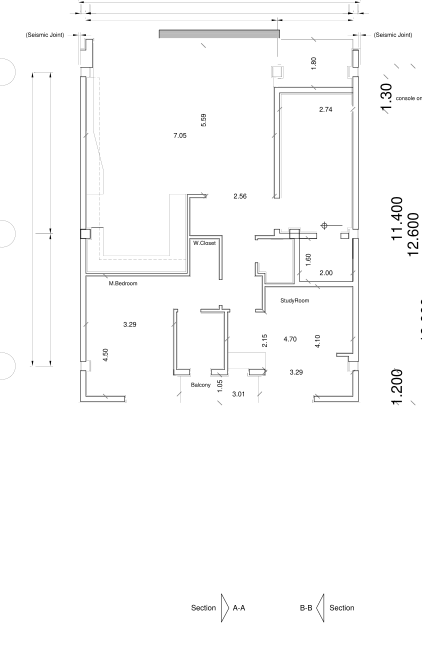

نقشه · طرح ۱۳۹۹
پلان طبقهٔ سوم
طبقهٔ سوم (+۱۲٫۵۸)
بازترسیم شماتیک از روی شیت، تقریبی.
بازترسیم شماتیک از روی شیت، تقریبی.

{kind=link}
برداشت
طبقهٔ سوم نسخهٔ نخست: نشیمن باز رو به کوچه با آشپزخانه، خواب اصلی و اتاق کار رو به حیاط، بالکن جنوبی — واحد سادهٔ دوخوابهای که خانواده برای پدر و مادر خوانده است.
با شاخصها میخواند
- شاخص ۵: دو خواب برای پدر و مادر بازنشسته، همانطور که خواسته شده بود.
- شاخص ۳: اتاق کار و مطالعه با یک تخت یکنفره؛ اتاق کاری که مهمان هم میگیرد.
- شاخص ۱: آشپزخانهٔ L شکل در دل نشیمن و ناهارخوری باز.
- شاخص ۴: حمام با وان در میانهٔ واحد.
چه چیزی را کم دارد
- حمام در میانهٔ پلان نشسته و پنجرهای به آن نمیرسد.
- پله به بام و بام باغ اینجا ترسیم نشده؛ آخرین طبقه است و بام را نشان نمیدهد.
چه پرسشی باز میماند
- بام: از این طبقه تا بام باغ چه میگذرد و بام مال کیست؟
- ترکیب واحدها: طبقهٔ پدر و مادر اینجاست، ولی روی برگه نامی ندارد.
جزئیات روی شیت
- نشیمن باز و آشپزخانهٔ L رو به کوچه
- خواب اصلی (M.Bedroom) و اتاق کار (StudyRoom) رو به حیاط
- حمام و توالت در میانه، کنار داکت
فضاها
نشیمن، ناهارخوری و آشپزخانهٔ باز، اتاق خواب والدین (M.Bedroom)، اتاق کار / مطالعه (StudyRoom)، حمام، سرویس بهداشتی، بالکن شمالی، پلکان و آسانسور
یادداشت
سری ۱۳۹۹/۰۴/۲۱ — نقشههای طرح ۱۳۹۹ که خانواده نگه داشته است. معمار دو ماه بعد (۱۳۹۹/۰۶/۱۳) بازنگریای کشید که طاق سبز، کف شیشهای مات روی گودال، بالکن با کف کشویی، اتاقک کار و اتاق بیدود را اضافه میکرد؛ آن نسخه روی سایت نیست و در متن فقط بهعنوان بازنگری یاد میشود.